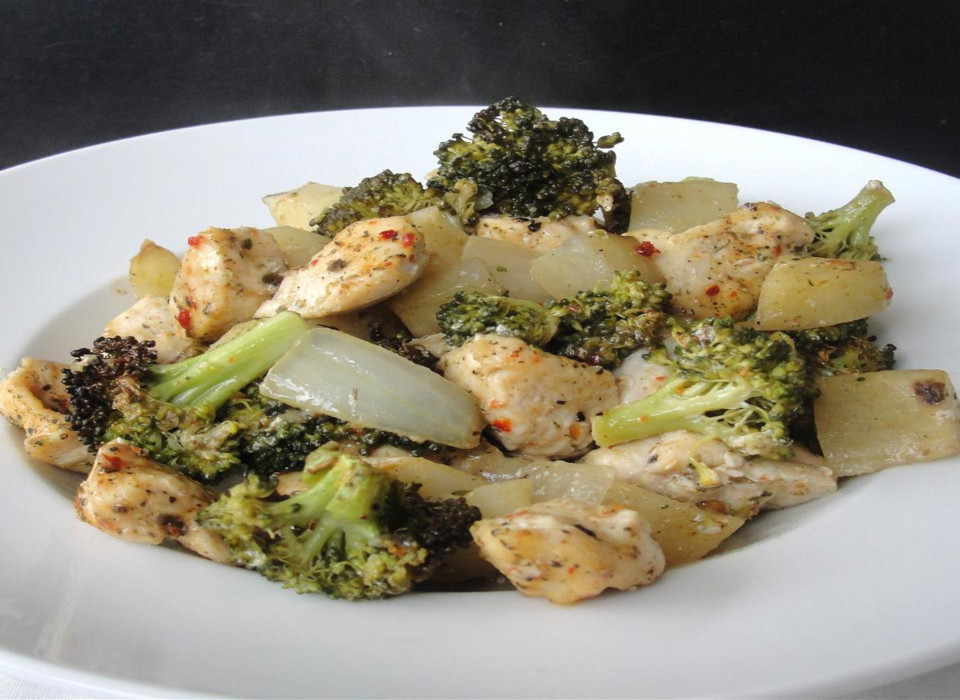

Baked Italian Chicken Dinner

Description
This is one of the easiest and most requested recipes. It's simple to make, and the ingredients are easy to find!
Preparation: 15 mins
Cook: 45 mins
Total: 1 hour
Servings: 4
Ingredients
- cooking spray
- 1 pound skinless,boneless chicken breast, cut into cubes.
- 1 (10 ounce) package frozen broccoli
- 4 potatoes, diced
- 1/4 cup butter, melted
- 1 (.7 ounce) package Italian dressing mix
Directions
- Preheat oven to 350 degrees F (175 degrees C). Spray a 13x9-inch baking dish with cooking spray.
- Spread chicken pieces, broccoli, and potatoes into the prepared baking dish, respectively. Drizzle melted butter over ingredients in the dish and season with the Italian dressing mix.
- Bake in preheated oven until the chicken is cooked through and potatoes are tender, 45 to 60 minutes.